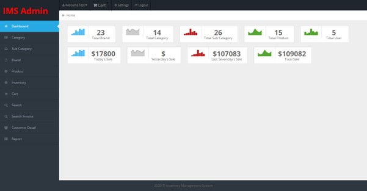
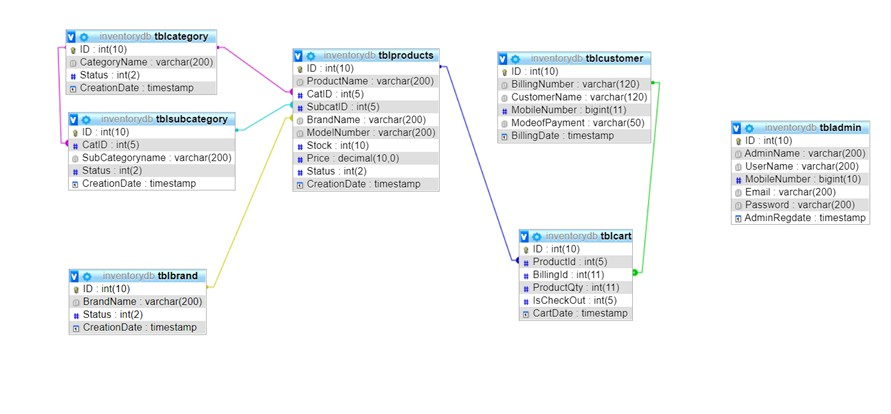

Inventory Management System
Show the project in GitHub @GitHublink
Inventory Management System is a web application which deals with managing the inventories of the small scale as well as the large-scale businesses.
Introduction
The Inventory Management System is a web-based application designed to streamline inventory operations for both small and large-scale businesses. It offers reliable and efficient services aimed at minimizing, and in some cases, completely eliminating the challenges present in traditional inventory systems.
This system is tailored to meet the specific operational needs of a business, ensuring smooth and effective workflow management. Unlike manual systems, this application automates tasks—such as handling inquiries and making corresponding entries—thanks to an integrated database management system that supports relationships between tables.
Key Features

Homepage
I developed the homepage of the Inventory Management System, featuring distinct user and admin login options for streamlined access. The navigation bar includes a "Home" link for general users to explore the platform, and an "Admin" link that directs administrators to a dedicated login for managing inventory, sales, and reports.
Key Features
The Inventory Management System includes a sidebar that organizes key functionalities for efficient navigation, primarily designed for administrators. It features side headings such as Dashboard, where admins can view a summary of total brands, categories, subcategories, products, and sales; Category, Sub Category, Brand, and Product sections for adding and updating respective details; Inventory for tracking item stock; Cart for managing checkout items; Search and Search Invoice for locating products and order invoices; and Reports for generating stock and sales reports over specific periods. This structured sidebar ensures admins can seamlessly manage all aspects of the inventory system.


Database Design
I designed a comprehensive class diagram for the Inventory Management System, illustrating the relationships between key database tables to ensure efficient data management. The diagram connects tables like tblcategory, tblsubcategory, tblbrand, tblproducts, tblcart, tblcustomer, and tbladmin, showcasing how categories, subcategories, and brands link to products, while customer and cart data integrate with billing details, and admin credentials secure system access. This structured design highlights my ability to model complex relationships for scalable inventory solutions.